| CSTR Conversion | 85.6 | % |
| Axial Dispersion Conversion | 90.2 | % |
| CSTR Temperature | 167 | °C |
| Axial Dispersion Temperature | 173 | °C |
24 The Steady-State Axial Dispersion Model
The axial dispersion model for tubular reactors is a plug flow model with mixing in the axial direction. The axial mixing terms contain constants called dispersion coefficients. This chapter considers using the dispersion coefficients as empirical parameters that can be adjusted to create a model that predicts the response of a non-ideal reactor.
24.1 Axial Dispersion
The nearly flat radial velocity profiles associated with plug flow occur when the flow is turbulent. In turbulent flow, swirling flow patterns known as eddies exist. They are similar to whirlpools. As fluid swirls in an eddy, the component of its velocity in the axial direction can become greater and smaller than the mean fluid velocity in the axial direction. This results in axial mixing of the fluid.
One way to account for this type of mixing while retaining the assumption of plug flow, is by adding the term, \(-D_{ax} \frac{\pi D^2}{4} \frac{d^2C_i}{dz^2}\), to the plug flow reactor mole balance for each reagent, \(i\). This term represents the axial mixing as a non-convective flux. Similarly, the term, \(-\lambda_{ax} \frac{\pi D^2}{4} \frac{d^2T}{dz^2}\), can be added to the plug flow reactor energy balance to account for thermal mixing in the axial direction. Again, the thermal mixing is represented as a non-convective flux resembling thermal conduction.
The representation of axial mixing using non-convective mass and energy fluxes is referred to as axial dispersion.
24.2 Dispersion Coefficients
To those familiar with mass transfer, the term added to the PFR mole balances looks like a mass diffusion term, and the term added to the energy balance looks like a thermal conduction term. Nonetheless, these terms represent axial disperson, not mass diffusion and heat conduction. The constants, \(D_{ax}\) and \(\lambda_{ax}\) are called dispersion coefficients. They are properties associated with the fluid flow and not the chemical reagents.
The axial dispersion coefficient, \(D_{ax}\), is not a molecular property. It is typically found using correlations between the axial Peclet number, Equation 24.1 and the Reynolds number, Equation 21.1. The axial termal dispersion coefficient, \(\lambda_{ax}\), is similarly found using correlations between the axial Peclet number for heat, Equation 24.2 and the Reynolds number.
\[ Pe_{ax} = \frac{4\dot{V}L}{\pi D^2 D_{ax}} \tag{24.1}\]
\[ Pe_{ax,h} = \frac{4\rho \tilde{C}_p \dot{V}L}{\pi D^2 \lambda_{ax}} \tag{24.2}\]
It is more common to add axial dispersion when modeling a packed bed. In that case, the catalyst particle diameter is used as the characteristic length, \(L\), in the axial Peclet numbers for mass and heat. The inverse of the axial Peclet number is also called the dispersion number, and sometimes the axial Peclet number is referred to as the Bodenstein number.
24.3 The Axial Dispersion Model
The steady-state axial dispersion mole and energy balance, Equations 24.3 and 24.4, are derived in Appendix I. They are second-order ordinary differential equations which means that two boundary conditions must be provided for each concentration and for the temperature. There are different ways to write those boundary conditions.
\[ - D_{ax} \frac{d^2C_i}{dz^2} + \frac{4 \dot{V}}{\pi D^2} \frac{dC_i}{dz} + \frac{4 C_i}{\pi D^2} \frac{d\dot{V}}{dz} = \sum_j \nu_{i,j}r_j \tag{24.3}\]
\[ - \lambda_{ax}\frac{d^2 T}{d z^2} + \frac{4 \dot{V}}{\pi D^2} \left(\sum_i C_i \hat{C}_{p,i}\right) \frac{d T}{d z} = \frac{4U}{D}\left(T_{ex} - T\right) - \sum_j r_j \Delta H_j \tag{24.4}\]
Within the reactor, according to the axial dispersion model, the net flow of a reagent in the axial direction is the sum of two components. One is convective flow and the other is the non-convective mixing flux. The Danckwerts boundary conditions assume that at the reactor inlet, these two terms combined must equal the purely convective flow of the feed to the reactor inlet. An analogus assumption is made regarding the heat flow, leading to the Danckwerts boundary conditions shown in Equations 24.5 and 24.6.
\[ \dot{V}_{feed}C_{i,feed} = \dot{V}_0 C_{i,0} - D_{ax} \frac{\pi D^2}{4} \frac{dC_i}{dz}\Bigg\vert_{z=0} \tag{24.5}\]
\[ \dot{V}_{feed}\sum_i\left(C_{i,feed} \hat{C}_{p,i} \right) T_{feed} = \dot{V}_0 \sum_i\left(C_{i,0} \hat{C}_{p,i} \right) T_0 - \lambda_{ax} \frac{\pi D^2}{4} \frac{dT}{dz}\Bigg\vert_{z=0} \tag{24.6}\]
Assuming that the concentrations and temperature stop changing when the fluid leaves the reactor yields a second boundary condition, Equations 24.7 and 24.8. Because one boundary condition is specified at the reactor inlet (\(z=0\)) and the other at the outlet (\(z=L\)), the axial dispersion design equations can be referred to as boundary-value ordinary differential equations (BVODEs).
\[ \frac{dC_i}{dz}\Bigg\vert_{z=L} = 0 \tag{24.7}\]
\[ \frac{dT}{dz}\Bigg\vert_{z=L} = 0 \tag{24.8}\]
It is known that at industrial conditions, axial dispersion is only significant near the reactor inlet. In packed bed reactors, its effect becomes negligible at a distance into the reactor equal to approximately 50 catalyst particle diameters.
24.4 The Axial Dispersion Model for Non-Ideal Reactors
As just noted, it often is not necessary to include axial dispersion when modeling an ideal tubular reactor with plug flow. However, the axial dispersion model has features that can make it attractive for use as an empirical model for non-ideal reactors. Specifically, when the dispersion coefficients are equal to zero, it becomes equal to the ideal PFR model. Example 24.7.1 shows that as the dispersion coefficients become very large, the axial dispersion model approaches the ideal CSTR model.
So, by varying the dispersion coefficients, the axial dispersion model can display behavior that spans the range from an ideal PFR to an ideal CSTR. Consider a real-world reactor that is not accurately described by either the PFR model or the CSTR model. It may be possible to find values for the dispersion coefficients such that the axial dispersion model does provide an accurate description of the non-ideal reactor.
When the volumetric flow rate is not constant, the presence the term, \(\frac{d\dot{V}}{dz}\), makes it considerably more involved to solve the axial dispersion design equations. As long as values can be found for the dispersion coefficients that result in an accurate representation of the non-ideal reactor, that term can be dropped, resulting in Equation 24.9. In addition, it then is no longer necessary to differentiale between \(\dot{V}_0\) and \(\dot{V}_{feed}\) in the Danckwerts boundary conditions.
\[ - D_{ax} \frac{d^2C_i}{dz^2} + \frac{4 \dot{V}}{\pi D^2} \frac{dC_i}{dz} = \sum_j \nu_{i,j}r_j \tag{24.9}\]
Numerical solution of the axial dispersion design equations is facilitated by converting them to an equivalent set of first order ODEs. Appendix I shows how this is done. Briefly, new variables are defined as being equal to the derivatives with respect to \(z\) of the concentrations and temperature, yielding Equations 24.10 and 24.11. Substitution of those new variables into the axial dispersion mole and energy balances reduces them to first order ODEs with the new variables being the dependent variables, Equations 24.12 and 24.13. The boundary conditions can also be expressed in terms of the new variables, Equations 24.14 through 24.17.
\[ \frac{dC_i}{dz} = \omega_i \tag{24.10}\]
\[ \frac{dT}{dz} = \omega_T \tag{24.11}\]
\[ - D_{ax}\frac{d \omega_i}{d z} = - \frac{4 \dot{V}}{\pi D^2}\omega_i + \sum_j \nu_{i,j}r_j \tag{24.12}\]
\[ - \lambda_{ax}\frac{d \omega_T}{d z} = - \frac{4 \dot{V}}{\pi D^2} \left(\sum_i C_i \hat{C}_{p,i}\right) \omega_T + \frac{4U}{D}\left(T_{ex} - T\right) - \sum_j r_j \Delta H_j \tag{24.13}\]
\[ C_{i,0} = C_{i,feed} + D_{ax} \frac{\pi D^2}{4} \frac{\omega_{i,0}}{\dot{V}} \tag{24.14}\]
\[ T_0 = \frac{\sum_iC_{i,feed} \hat{C}_{p,i}}{\sum_iC_{i,0} \hat{C}_{p,i}}T_{feed} + \lambda_{ax} \frac{\pi D^2}{4} \frac{\omega_{T,0}}{\dot{V} \sum_i\left(C_{i,0} \hat{C}_{p,i} \right)} \tag{24.15}\]
\[ \omega_i\Big\vert_{z=L} = \omega_{i,1} = 0 \tag{24.16}\]
\[ \omega_T\Big\vert_{z=L} = \omega_{T,1} = 0 \tag{24.17}\]
24.5 The Non-Ideal Axial Dispersion Reactor Function
As with other reactor models, it is useful to define a reactor function that can be used to solve the non-ideal axial dispersion reactor model equations. In this case, those design equations are BVODEs. The numerical solution of BVODEs is described in Appendix L. Doing so involves calling a BVODE solver from a mathematics software of one’s choosing.
The details for using a BVODE solver will depend upon the mathematics software package it comes from. Generally a BVODE solver must be provided with five things. The first two are the values of the independent variable at each of the boundaries. In the axial dispersion model the boundaries are usually \(z=0\) and \(z=L\). The third is a guess for the values of the dependent variables (\(w_i\), \(w_T\), \(C_i\), and \(T\)) within the reactor (see Appendix L).
The fourth thing that must be provided is the name of a function that evaluates the derivatives in the design equations (\(\frac{d\omega_i}{dz}\), \(\frac{d\omega_T}{dz}\), \(\frac{dC_i}{dz}\), and \(\frac{dT}{dz}\)). The last thing that must be provided to the BVODE solver the the name of a function that evaluates the boundary conditions.
The function that evaluates the derivatives and the function that evaluates the boundary conditions must be written by the engineer. However, since the BVODE solver will call them, the arguments they receive and the quantities they return are specified by the mathematics software package being used. In general, the derivatives function receives values of the independent and dependent variables as arguments and returns the corresponding values of the derivatives. The function that evaluates the boundary conditions typically receives the values of the dependent variables at the boundaries (i. e. at the reactor inlet and outlet) and it returns residuals corresponding to the boundary conditions.
The non-ideal axial dispersion reactor function is also written by the engineer performing the analysis. It is not called directly by the BVODE solver, so the engineer can decide what arguments it takes and what quantities it returns. If only one reactor configuration needs to be simulated, the reactor function need not receive any arguments. In Reaction Engineering Basics the axial dispersion reactor function always returns the profiles of the dependent variables from the reactor inlet to its outlet.
24.5.1 Multiplicy of Steady States
Just as was seen with steady-state CSTRs, there can be multiple solutions to the steady-state axial dispersion model design equations. Multiple steady states are a consequence of mixing between the reactor inlet and its outlet. They are not observed in steady-state PFRs because there isn’t any axial mixing, but by adding the axial dispersion term, multiple steady states become possible. When multiple steady states are possible, the one that is found by the BVODE solver typically depends upon the guess for the values of the dependent variables provided to it.
24.6 Fitting the Axial Dispersion Model to Reactor Data
If an engineer wants to be able to simulate a non-ideal reactor using the axial dispersion model, it is necessary to find the best values for the dispersion coefficients. The procedure for doing so is effectively the same as the procedure for finding rate expression parameters during the analysis of kinetics data. In the present case, the rate expression parameters are known and the dispersion coefficients are estimated by fitting the axial dispersion model to experimental data.
There can be one very significant difference, however. In kinetics data analysis the engineer can perform many, many experiments using a small laboratory reactor. If an engineer needs to estimate dispersion coefficients for an existing, commercial scale reactor, it is likely that it won’t be possible to perform a set of experiments to gather data.
One option in this situation is to measure the age function for the reactor (see Chapter 22). Often the age function can be measured without disrupting the operation of the reactor, if an appropriate tracer can be identified and added to the feed as an impulse stimulus. A transient axial dispersion model can be used to calculate a model-predicted age function. (The transient axial dispersion model is not considered in Reaction Engineering Basics; consult a more advanced reaction engineering reference, if needed.) Then the model-predicted age function can be fit to age function data from the commercial reactor using the dispersion coefficients as the fitting parameters.
One potential problem with using age function data is that the age function may depend only weakly on the thermal dispersion coefficient. If so, the fit may yield a good estimate for the axial dispersion coefficient, but not for the thermal dispersion coefficient. If the thermal dispersion coefficient is poorly estimated and the engineer feels a better estimate is needed, one option is to measure the temperature profile in the reactor. The temperature profile can usually be measured without disrupting the operation of the reactor. Depending on the degree of instrumentation in the reactor, the capability for measuring the temperature profile may already exist.
If both the age function and the temperature profile are measured, the resulting data set contains multiple responses. The methods used for kinetics data analysis in Chapter 19 through 21 apply for single-response data. Software for parameter estimation using mulitple response data will be necessary. Parameter estimation using multiple response data goes beyond the scope of Reaction Engineering Basics.
24.7 Examples
The first two examples that follow illustrate the effects of the dispersion coefficients upon the predicted concentration and temperature profiles in the reactor. They consider an adiabatic reactor with negligible pressure drop so that only the axial dispersion mole and energy balances are needed. The third example considers an reactor that exchanges heat with a heat exchange fluid.
24.7.1 Effect of Dispersion Coefficients on the Response Predicted by the Axial Dispersion Model
An incompressible liquid at 20 °C containing 5 kmol m3 each of reagents A and B is going to be used as the feed to a non-ideal tubular reactor. The liquid has a constant heat capacity of 1.7 cal g-1 K-1 and a constant density of 0.65 g cm-3. Reaction (1) will take place within the reactor. The rate expression for the reaction is shown in equation (2) where the rate coefficient exhibits Arrhenius temperature depedence with a pre-exponential factor of 2.65 x 106 m3 kmol-1 s-1 and an activation energy of 15 kcal mol-1. The heat of reaction (1) is -7500 cal mol-1. The reactor is 15 m long with a diameter of 0.1 m, and it will operate adiabatically with negligible pressure drop. The liquid will be fed to the reactor at a rate of 0.1 L min-1. Plot the profiles of the temperature and the concentration of A for a PFR and for the axial dispersion model with the dispersion coefficients shown in the table below. Additionally indicate on the graphs the outlet temperature and concentration of A for a CSTR of equal volume.
\[ A + B \rightarrow Z \tag{1} \]
\[ r=kC_AC_B \tag{2} \]
| \(D_{ax} \left(\text{m}^2 \text{ s}^{-1}\right)\) | \(\lambda_{ax} \left(\text{cal m}^{-1} \text{ s}^{-1} \text{ K}^{-1}\right)\) |
|---|---|
| 1.0 | 1.0 x 106 |
| 1.0 x 10-2 | 1.0 x 104 |
| 1.0 x 10-3 | 1.0 x 103 |
| 1.0 x 10-5 | 1.0 x 101 |
Click Here to See What an Expert Might be Thinking at this Point
This assignment is quite straightforward. It asks me to calculate a concentration and a temperature profile for a PFR and for a non-ideal axial dispersion reactor with a few sets of dispersion coefficients. I can use a PFR reactor function and an axial dispersion reactor function to calculate the profiles. It also asks me to calculate the outlet concentration and temperature for a CSTR of the same volume, and I can use a CSTR reactor function for that.
I’ll start by summarizing the assignment. I’ll use appropriate variable symbols to represent each quantity. I’ll use a subscripted “feed” to denote quantities related to the feed, a “0” to denote the reactor inlet at \(z=0\), and a “1” to denote the reactor outlet at \(z=L\). When a variable symbol represents a set of values (i. e. a vector), I’ll underline the symbol.
24.7.1.1 Assignment Summary
Reaction:
\[ A + B \rightarrow Z \tag{1} \]
Rate Expression:
\[ r=kC_AC_B \tag{2} \]
Reactor: PFR, Non-ideal Axial Dispersion, CSTR
Reactor Schematic:
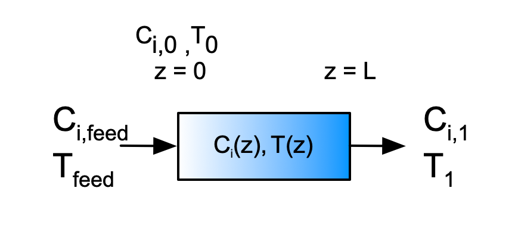
Quantities of Interest: \(\underline{C}_A\) vs. \(\underline{z}\) and \(\underline{T}\) vs. \(\underline{z}\)
Given and Known Constants: \(T_{feed}\) = 20 °C, \(C_{A,feed}\) = 5.0 kmol m-3, \(C_{B,feed}\) = 5.0 kmol m-3, \(\tilde{C}_p\) = 1.7 cal g-1 K-1, \(\rho\) = 0.65 g cm-3, \(k_0\) = 2.65 x 106 m3 kmol-1 s-1, \(E\) = 15 kcal mol-1, \(\Delta H\) = -7500 cal mol-1,\(L\) = 15 m, \(D\) = 0.1 m, \(\dot{V}\) = 0.1 L min-1, and \(D_{ax}\) and \(\lambda_{ax}\) per Table 24.1.
24.7.1.2 Mathematical Formulation of the Analysis
Click Here to See What an Expert Might be Thinking at this Point
I’ll start with the PFR model. The assignment doesn’t explicitly state that the reactor operates at steady-state, but that can be inferred since there is no mention of start-up, shut-down, or any sudden changes in a reactor input. The assignment does state that the reactor is adiabatic and there is negligible pressure drop. As such, I do not need an exchange fluid energy balance or a momentum balance; only mole balances and an energy balance are needed.
The general PFR mole balance is given in Equation 6.33.
\[ \frac{\partial \dot{n}_i}{\partial z} + \cancelto{0}{\frac{\pi D^2}{4\dot{V}} \frac{\partial\dot{n}_i}{\partial t}} - \cancelto{0}{\frac{\pi D^2\dot{n}_i}{4\dot{V}^2} \frac{\partial \dot{V}}{\partial t}} =\frac{\pi D^2}{4}\sum_j \nu_{i,j}r_j \]
Since this PFR operates at steady-state, the time derivatives are equal to zero and the spatial derivative becomes an ordinary derivative. Additionally, there is only one reaction, so the summation reduces to a single term, and it isn’t necessary to index the reaction.
\[ \frac{d \dot{n}_i}{d z} =\frac{\pi D^2}{4} \nu_{i}r \]
The general PFR energy balance is given in Equation 6.34.
\[ \begin{split} \cancelto{\dot{V} \rho \tilde{C}_p}{\left(\sum_i \dot{n}_i \hat{C}_{p,i} \right)} \frac{\partial T}{\partial z} +& \cancelto{0}{\frac{\pi D^2}{4\dot{V}} \sum_i \left(\dot{n}_i \hat{C}_{p,i} \right) \frac{\partial T}{\partial t}} - \cancelto{0}{\frac{\pi D^2}{4} \frac{\partial P}{\partial t}} \\ &= \cancelto{0}{\pi D U\left( T_{ex} - T \right)} - \frac{\pi D^2}{4}\sum_j r_j \Delta H_j \end{split} \]
As with the mole balance, the time derivatives equal zero making the spatial derivative an ordinary derivative. The assignment provides the gravimetric heat capacity for the fluid, so the sum over the molar heat capacities can be replaced with a single term. The reactor is adiabatic, so the heat transfer term is equal to zero, and again there is only one reaction causing the last summation to reduce to a single term. Finally, because the fluid is an incompressible liquid, the volumetric flow rate is constant, and it isn’t necessary to use an index to differentiate between values in the feed, at the inlet, and at the outlet.
\[ \dot{V} \rho \tilde{C}_{p} \frac{d T}{d z} = - \frac{\pi D^2}{4} r \Delta H \quad \Rightarrow \quad \frac{d T}{d z} = - \frac{\pi D^2}{4\dot{V} \rho \tilde{C}_{p}} r \Delta H \]
The design equations as written above have the form of derivative expressions. They constitute a set of IVODEs with the molar flow rates and the temperature as the dependent variables and the axial position as the independent variable. Initial values and a stopping criterion are needed in order to solve them numerically. For a PFR, there is no difference between the feed and the inlet, so the initial values can be expressed in terms of the feed values. The reactor inlet can be defined as \(z=0\), in which case the initial values of the molar flow rates are simply equal to the feed concentration times the volumetric flow rate. The feed temperature is a known constant, as is the length of the reactor, which is the stopping criterion.
Design Equations
\[ \frac{d \dot{n}_A}{d z} = -\frac{\pi D^2}{4} r \tag{3} \]
\[ \frac{d \dot{n}_B}{d z} = -\frac{\pi D^2}{4} r \tag{4} \]
\[ \frac{d \dot{n}_Z}{d z} = \frac{\pi D^2}{4} r \tag{5} \]
\[ \frac{d T}{d z} = - \frac{\pi D^2}{4\dot{V} \rho \tilde{C}_{p}} r \Delta H \tag{6} \]
Initial Values and Stopping Criterion
| Variable | Initial Value | Stopping Criterion |
|---|---|---|
| \(z\) | \(0\) | \(L\) |
| \(\dot{n}_A\) | \(\dot{V}C_{A,feed}\) | |
| \(\dot{n}_B\) | \(\dot{V}C_{B,feed}\) | |
| \(\dot{n}_Z\) | \(0\) | |
| \(T\) | \(T_{feed}\) |
Click Here to See What an Expert Might be Thinking at this Point
In addition to the initial values and stopping criterion, a derivatives function must be provided to the IVODE solver. The derivatives function will receive the values of the independent and dependent variables at the start of an integration step. It must use them, along with the given and known constants, to evaluate and return the values of the derivatives. The design equations can be used to evaluate the derivatives, but before that can be done, any other unknown quantities must be calculated. The rate, \(r\), is the only unknown quantity in the PFR design equations. It can be calculated using the rate expression provided in the assignment. To do that, the rate coefficient and the concentrations of A and B must be calculated. The Arrhenius expression, Equation 4.8, can be used to find the rate coefficient, and the defining equation for concentration in a flow system, Equation 1.15, can be used for the concentrations.
PFR Derivatives Function
Arguments: \(z\), \(\dot{n}_A\), \(\dot{n}_B\), \(\dot{n}_Z\), and \(T\).
Returns; \(\frac{d\dot{n}_A}{dz}\), \(\frac{d\dot{n}_B}{dz}\), \(\frac{d\dot{n}_Z}{dz}\), and \(\frac{dT}{dz}\).
Algorithm:
\[ k = k_0 \exp{\left(\frac{-E}{RT}\right)} \tag{7} \]
\[ C_A = \frac{\dot{n}_A}{\dot{V}} \tag{8} \]
\[ C_B = \frac{\dot{n}_B}{\dot{V}} \tag{9} \]
\[ r=kC_AC_B \tag{2} \]
\[ \frac{d \dot{n}_A}{d z} = -\frac{\pi D^2}{4} r \tag{3} \]
\[ \frac{d \dot{n}_B}{d z} = -\frac{\pi D^2}{4} r \tag{4} \]
\[ \frac{d \dot{n}_Z}{d z} = \frac{\pi D^2}{4} r \tag{5} \]
\[ \frac{d T}{d z} = - \frac{\pi D^2}{4\dot{V} \rho \tilde{C}_{p}} r \Delta H \tag{6} \]
Click Here to See What an Expert Might be Thinking at this Point
To complete the PFR model, I need to write a PFR reactor function that solves the design equations and returns corresponding sets of values of \(z\), \(\dot{n}_A\), \(\dot{n}_B\), \(\dot{n}_Z\), and \(T\) that span the range from \(z=0\) to \(z=L\). I will only be solving the PFR design equations for one set of inputs and reactor parameters, so I won’t need to pass any arguments to the reactor function.
I’ll use an IVODE solver to solve the design equations. I’ll need to pass the initial values and stopping criterion, along with a reference to the derivatives function, to the IVODE solver. It will return the profiles of the dependent variables.
PFR Reactor Function
Arguments: none.
Returns; \(\underline{z}\), \(\underline{\dot{n}}_A\), \(\underline{\dot{n}}_B\), \(\underline{\dot{n}}_Z\), and \(\underline{T}\).
Algorithm:
\[ \begin{matrix} \text{initial values, stopping criterion, and PFR derivatives function}\\ \Downarrow\\ \text{IVODE Solver}\\ \Downarrow\\ \underline{z}, \underline{\dot{n}}_A, \underline{\dot{n}}_B, \underline{\dot{n}}_Z, \underline{T} \end{matrix} \tag{10} \]
Click Here to See What an Expert Might be Thinking at this Point
Next I’ll formulate the axial dispersion reactor model. As for the PFR model, I won’t need a momentum balance or an exchange fluid balance. The remaining mole and energy balances are the steady-state versions. Half of design equations are definitions used to convert the equations from second-order to first-order IVODEs. Quite simply, if \(y\) is one of the dependent variables, then \(\omega_y\) is simply its derivative (Equations 24.10 and 24.11).
\[ \frac{dC_i}{dz} = \omega_i \qquad \frac{dT}{dz} = \omega_T \]
The first-order axial dispersion mole balances then take the form shown in Equation 24.12.
\[ - D_{ax}\frac{d \omega_i}{d z} = - \frac{4 \dot{V}}{\pi D^2}\omega_i + \sum_j \nu_{i,j}r_j \]
It can be rearranged in the form of a derivative expression, and since there is only one reaction in this assignment, the sum becomes a single term, and it isn’t necessary to index the reaction.
\[ \frac{d \omega_i}{d z} = \frac{1}{D_{ax}} \frac{4 \dot{V}}{\pi D^2}\omega_i - \nu_{i}r \]
The first-order axial dispersion energy balance is given by Equation 24.13.
\[ - \lambda_{ax}\frac{d \omega_T}{d z} = - \frac{4 \dot{V}}{\pi D^2} \cancelto{\dot{V} \rho \tilde{C}_p}{\left(\sum_i C_i \hat{C}_{p,i}\right)} \omega_T + \cancelto{0}{\frac{4U}{D}\left(T_{ex} - T\right)} - \sum_j r_j \Delta H_j \]
It, too, can be rearranged in the form of a derivative expression with the summation replaced by a single reaction term. Since this reactor is adiabatic, the heat exchange term can be set equal to zero. Additionally, since the gravimetric heat capacity is provided in the assignment narrative, the sum over the molar heat capacities can be replaced with a single term.
\[ \frac{d\omega_T}{dz} = \frac{1}{\lambda_{ax}} \frac{4 \rho \dot{V} \tilde{C}_p}{\pi D^2} \omega_T + r \Delta H \]
The combined set of design equations can be treated as a set of CVODEs or a set of BVODEs. Here they will be solved numerically using a BVODE solver, and so a set of boundary conditions is required. The Danckwerts boundary conditions, Equations 24.14 and 24.15, can be used for the concentrations and temperature at the reactor inlet, \(z=0\).
\[ C_{i,0} = C_{i,feed} + D_{ax} \frac{\pi D^2}{4} \frac{\omega_{i,0}}{\dot{V}} \]
\[ T_0 = \frac{\cancelto{\rho\tilde{C}_p}{\sum_iC_{i,feed} \hat{C}_{p,i}}}{\cancelto{\rho\tilde{C}_p}{\sum_iC_{i,0} \hat{C}_{p,i}}}T_{feed} + \lambda_{ax} \frac{\pi D^2}{4} \frac{\omega_{T,0}}{\dot{V} \cancelto{\rho\tilde{C}_p}{\sum_i\left(C_{i,0} \hat{C}_{p,i} \right)}} \]
All of the boundary conditions must be written in the form of residual expressions, and again, in the temperature boundary condition, the sum over the molar heat capacities can be replaced with a single term containing the gravimetric heat capacity. Upon doing so, the numerator and denominator in the fraction on the right of the equals sign become equal and cancel.
\[ 0 = C_{i,feed} + D_{ax} \frac{\pi D^2}{4\dot{V}} \omega_{i,0} - C_{i,0} = \epsilon_{i,0} \]
\[ 0 = \frac{\rho \tilde{C}_p}{\rho \tilde{C}_p}T_{feed} + \lambda_{ax} \frac{\pi D^2}{4} \frac{\omega_{T,0}}{\dot{V} \rho \tilde{C}_p} - T_0 = \epsilon_{T,0} \]
The remaining boundary conditions, Equations 24.16 and 24.17, are already in the form of residual expressions.
\[ 0 = \omega_{i,1} = \epsilon_{i,1} \]
\[ 0 = \omega_{T,1} = \epsilon_{T,1} \]
Design Equations
\[ \frac{dC_A}{dz} = \omega_A \tag{11} \]
\[ \frac{dC_B}{dz} = \omega_B \tag{12} \]
\[ \frac{dC_Z}{dz} = \omega_Z \tag{13} \]
\[ \frac{dT}{dz} = \omega_T \tag{14} \]
\[ \frac{d \omega_A}{d z} = \frac{1}{D_{ax}} \frac{4 \dot{V}}{\pi D^2}\omega_A + r \tag{15} \]
\[ \frac{d \omega_B}{d z} = \frac{1}{D_{ax}} \frac{4 \dot{V}}{\pi D^2}\omega_B + r \tag{16} \]
\[ \frac{d \omega_Z}{d z} = \frac{1}{D_{ax}} \frac{4 \dot{V}}{\pi D^2}\omega_Z - r \tag{17} \]
\[ \frac{d\omega_T}{dz} = \frac{1}{\lambda_{ax}} \frac{4 \rho \dot{V} \tilde{C}_p}{\pi D^2} \omega_T + r \Delta H \tag{18} \]
Boundary Condition Residual Equations
\[ 0 = C_{A,feed} + D_{ax} \frac{\pi D^2}{4\dot{V}} \omega_{A,0} - C_{A,0} = \epsilon_{A,0} \]
\[ 0 = C_{B,feed} + D_{ax} \frac{\pi D^2}{4\dot{V}} \omega_{B,0} - C_{B,0} = \epsilon_{B,0} \]
\[ 0 = D_{ax} \frac{\pi D^2}{4\dot{V}} \omega_{Z,0} - C_{A,0} = \epsilon_{Z,0} \]
\[ 0 = T_{feed} + \lambda_{ax} \frac{\pi D^2}{4\dot{V} \rho \tilde{C}_p} \omega_{T,0} - T_0 = \epsilon_{T,0} \]
\[ 0 = \omega_{A,1} = \epsilon_{A,1} \]
\[ 0 = \omega_{B,1} = \epsilon_{B,1} \]
\[ 0 = \omega_{Z,1} = \epsilon_{Z,1} \]
\[ 0 = \omega_{T,1} = \epsilon_{T,1} \]
Click Here to See What an Expert Might be Thinking at this Point
I’ll use a BVODE solver to solver the axial dispersion design equations. To do that I will need to provide the upper and lower limits of the independent variable, \(z\) (\(0\) to \(L\)), a derivatives function and a boundary value residuals function. The given and known constants can be used in both functions. Both functions require \(D_{ax}\) and \(\lambda_{ax}\), and they cannot be passed to them as arguments because the arguments are set by the mathematical software package that provides the BVODE solver. Therefore, they will need to be made available by some other means, such as by making them global variables or using a pass-through function.
The deriviatives function will receive values of the independent and dependent variables as arguments and must return the values of the derivatives in the design equations. In order to do that, any other quantities appearing in the design equations must be calculated first. As was the case for the PFR model, the only other unknown is the rate, and that can be calculated the same was as in the PFR function.
The boundary value residuals function will receive the values of the dependent variables at each of the boundaries (\(z=0\) and \(z=L\)). The given and known constants can be used, but if there are any other unknown quantities, they must first be calculated. In the present case, there aren’t any additional unknown constants.
Axial Dispersion Derivatives Function
Arguments: \(z\), \(C_A\), \(C_B\), \(C_Z\), \(T\), \(\omega_A\), \(\omega_B\), \(\omega_Z\), and \(\omega_T\)
Must Be Available: \(D_{ax}\) and \(\lambda_{ax}\)
Returns: \(\frac{dC_A}{dz}\), \(\frac{dC_B}{dz}\), \(\frac{dC_Z}{dz}\), \(\frac{dT}{dz}\), \(\frac{d\omega_A}{dz}\), \(\frac{d\omega_B}{dz}\), \(\frac{d\omega_Z}{dz}\), and \(\frac{d\omega_T}{dz}\)
Algorithm
\[ k = k_0 \exp{\left(\frac{-E}{RT}\right)} \tag{7} \]
\[ r=kC_AC_B \tag{2} \]
\[ \frac{dC_A}{dz} = \omega_A \tag{11} \]
\[ \frac{dC_B}{dz} = \omega_B \tag{12} \]
\[ \frac{dC_Z}{dz} = \omega_Z \tag{13} \]
\[ \frac{dT}{dz} = \omega_T \tag{14} \]
\[ \frac{d \omega_A}{d z} = \frac{1}{D_{ax}} \frac{4 \dot{V}}{\pi D^2}\omega_A + r \tag{15} \]
\[ \frac{d \omega_B}{d z} = \frac{1}{D_{ax}} \frac{4 \dot{V}}{\pi D^2}\omega_B + r \tag{16} \]
\[ \frac{d \omega_Z}{d z} = \frac{1}{D_{ax}} \frac{4 \dot{V}}{\pi D^2}\omega_Z - r \tag{17} \]
\[ \frac{d\omega_T}{dz} = \frac{1}{\lambda_{ax}} \frac{4 \rho \dot{V} \tilde{C}_p}{\pi D^2} \omega_T + r \Delta H \tag{18} \]
Boundary Value Residuals Function
Arguments: \(C_{A,0}\), \(C_{B,0}\), \(C_{Z,0}\), \(T_0\), \(\omega_{A,0}\), \(\omega_{B,0}\), \(\omega_{Z,0}\), \(\omega_{T,0}\), \(C_{A,1}\), \(C_{B,1}\), \(C_{Z,1}\), \(T_1\), \(\omega_{A,1}\), \(\omega_{B,1}\), \(\omega_{Z,1}\), and \(\omega_{T,1}\)
Must Be Available: \(D_{ax}\) and \(\lambda_{ax}\)
Returns: \(\epsilon_{A,0}\), \(\epsilon_{B,0}\), \(\epsilon_{Z,0}\), \(\epsilon_{T,0}\), \(\epsilon_{A,1}\), \(\epsilon_{B,1}\), \(\epsilon_{Z,1}\), and \(\epsilon_{T,1}\)
Algorithm:
\[ \epsilon_{A,0} = C_{A,feed} + D_{ax} \frac{\pi D^2}{4\dot{V}} \omega_{A,0} - C_{A,0} \tag{19} \]
\[ \epsilon_{B,0} = C_{B,feed} + D_{ax} \frac{\pi D^2}{4\dot{V}} \omega_{B,0} - C_{B,0} \tag{20} \]
\[ \epsilon_{Z,0} = D_{ax} \frac{\pi D^2}{4\dot{V}} \omega_{Z,0} - C_{A,0} \tag{21} \]
\[ \epsilon_{T,0} = T_{feed} + \lambda_{ax} \frac{\pi D^2}{4\dot{V} \rho \tilde{C}_p} \omega_{T,0} - T_0 \tag{22} \]
\[ \epsilon_{A,1} = \omega_{A,1} \]
\[ \epsilon_{B,1} = \omega_{B,1} \tag{23} \]
\[ \epsilon_{Z,1} = \omega_{Z,1} \tag{24} \]
\[ \epsilon_{T,1} = \omega_{T,1} \tag{25} \]
Click Here to See What an Expert Might be Thinking at this Point
To complete the axial dispersion model I need to write an axial dispersion reactor function that solves the axial dispersion design equations and returns corresponding sets of values of \(z\), \(C_A\), \(C_B\), \(C_Z\), \(T\), \(\omega_A\), \(\omega_B\), \(\omega_Z\), and \(\omega_T\) that span the range from \(z=0\) to \(z=L\). I will need to solve them for the different combinations of dispersion coefficients listed in Table 24.1, so I will pass the dispersion coeffiencts as arguments.
I’ll use a BVODE solver to solve the BVODEs. When I do that, I’ll need to provide the upper and lower limts of the independent variable \(z\) (\(0\) to \(L\)), a guess for each of the dependent variables in that range, the axial dispersion derivatives function, and the axial dispersion boundary value residuals function. Since I might need different guesses for the different values of the dispersion coefficients, I’ll also pass the guesses to the axial dispersion reactor model as arguments.
Axial Dispersion Reactor Function
Arguments: \(D_{ax}\), \(\lambda_{ex}\), \(C_{A,guess}\), \(C_{B,guess}\), \(C_{Z,guess}\), \(T_{guess}\), \(\omega_{A,guess}\), \(\omega_{B,guess}\), \(\omega_{Z,guess}\), and \(\omega_{T,guess}\).
Returns: \(\underline{z}\), \(\underline{C}_A\), \(\underline{C}_B\), \(\underline{C}_Z\), \(\underline{T}\), \(\underline{\omega}_A\), \(\underline{\omega}_B\), \(\underline{\omega}_Z\), and \(\underline{\omega}_T\)
Algorithm:
\[ \begin{matrix} D_{ax}, \lambda_{ex}, C_{A,guess},\\ C_{B,guess}, C_{Z,guess}, \\ T_{guess}, \omega_{A,guess}, \omega_{B,guess},\\ \omega_{Z,guess}, \omega_{T,guess} \end{matrix} \quad \Rightarrow \quad \begin{matrix}\text{available to}\\ \text{axial dispersion derivatives function}\\ \text{boundary value residuals function} \end{matrix} \tag{26} \]
\[ \begin{matrix} x_0, L, C_{A,guess}, C_{B,guess}, C_{Z,guess}, T_{guess},\\ \omega_{A,guess}, \omega_{B,guess}, \omega_{Z,guess}, \omega_{T,guess}, \\ \text{axial dispersion derivatives function}, \\ \text{boundary value residuals function} \\ \Downarrow \\ \text{BVODE Solver} \\ \Downarrow \\ \underline{z}, \underline{C}_A, \underline{C}_B, \underline{C}_Z, \underline{T}, \underline{\omega}_A, \underline{\omega}_B, \underline{\omega}_Z, \underline{\omega}_T \end{matrix}\tag{27} \]
Click Here to See What an Expert Might be Thinking at this Point
The last reactor model I need is the CSTR reactor model. Like the other models, the design equations will consist of steady-state mole and energy balances. The general form of the CSTR mole balance is given in Equation 6.24.
\[ \cancelto{0}{\frac{V}{\dot{V}}\frac{d \dot{n}_i}{dt}} + \cancelto{0}{\frac{\dot{n}_i}{\dot{V}}\frac{dV}{dt}} - \cancelto{0}{\frac{\dot{n}_iV}{\dot{V}^2}\frac{d \dot{V}}{dt}} = \dot{n}_{i,in} - \dot{n}_i + V \sum_j \nu_{i,j}r_j \]
As before, the time derivatives are all equal to zero, the sum over the reactions reduces to a single term, and there is no need to index the reaction.
\[ 0 = \dot{n}_{i,0} - \dot{n}_{i,1} + V \nu_ir \]
The general CSTR energy balance is shown in Equation 6.25.
\[ \begin{split} \cancelto{0}{\frac{V}{\dot{V}}\sum_i \left( \dot{n}_i \hat{C}_{p,i} \right) \frac{dT}{dt}} &- \cancelto{0}{V \frac{dP}{dt}} - \cancelto{0}{P\frac{dV}{dt}} = \cancelto{0}{\dot{Q}} - \cancelto{0}{\dot{W}} \\&- \cancelto{\rho \dot{V} \int_{T_{0}}^T \tilde{C}_{p}dT} {\sum_i\dot{n}_{i,in} \int_{T_{0}}^T \hat{C}_{p,i}dT} - V\sum_j r_j \Delta H_j \end{split} \]
Like the other models, the time derivatives are all equal to zero (steady-state), the sum over the molar heat capacities can be replaced with a single term involving the gravimetric heat capacity, the heat exchange term is equal to zero, the sum over the reactions reduces to a single term, and it isn’t necessary to index the reaction. The heat capacity is a constant and can be taken outside of the integral, which can then be evaluated. It can also be assumed that the agitator does negligible work. Since there are no other shafts or moving boundaries, the work term also equals zero.
\[ 0 = \dot{V}\tilde{C}_{p} \left(T - T_{feed}\right) - V r \Delta H \]
The CSTR design equations are ATEs, and they are already written in the form of residual expressions. To solve them numerically I will need to provide guesses for the unknowns.
CSTR Design Equations
\[ 0 = \dot{n}_{A,0} - \dot{n}_{A,1} - Vr = \epsilon_1 \tag{28} \]
\[ 0 = \dot{n}_{B,0} - \dot{n}_{B,1} - Vr = \epsilon_2 \tag{29} \]
\[ 0 = \dot{n}_{Z,0} - \dot{n}_{Z,1} + Vr = \epsilon_3 \tag{30} \]
\[ 0 = \dot{V}\tilde{C}_{p} \left(T - T_{feed}\right) - V r \Delta H = \epsilon_4 \tag{31} \]
Click Here to See What an Expert Might be Thinking at this Point
I’ll use an ATE solver to solve the CSTR design equations. In addition to guesses for the unknowns, \(\dot{n}_{A,1,guess}\), \(\dot{n}_{B,1,guess}\), \(\dot{n}_{Z,1,guess}\), and \(T_{1,guess}\), I will need to provide a residuals function. The residuals function will receive values of the CSTR unknowns as arguments and it must return the residuals corresponding to the CSTR design equations. In order to do that, it must first calculate the other unknowns that appear in the design equations. Here the other unknowns are the inlet molar flow rates and the reaction rate. The rate can be calculated the same way as in the PFR model, making sure to use the outlet molar flow rates. The inlet molar flow rates can be calculated from the feed concentrations and the volumetric flow rate.
CSTR Residuals Function
Arguments: \(\dot{n}_{A,1}\), \(\dot{n}_{B,1}\), \(\dot{n}_{Z,1}\), and \(T_{1}\).
Returns: \(\epsilon_1\), \(\epsilon_2\), \(\epsilon_3\), and \(\epsilon_4\)
Algorithm:
\[ \dot{n}_{A,0} = \dot{V}C_{A,feed} \tag{32} \]
\[ \dot{n}_{B,0} = \dot{V}C_{B,feed} \tag{33} \]
\[ \dot{n}_{Z,0} = 0 \tag{34} \]
\[ k = k_0 \exp{\left(\frac{-E}{RT}\right)} \tag{7} \]
\[ C_A = \frac{\dot{n}_{A,1}}{\dot{V}} \tag{35} \]
\[ C_B = \frac{\dot{n}_{B,1}}{\dot{V}} \tag{36} \]
\[ r=kC_AC_B \tag{2} \]
\[ \epsilon_1 = \dot{n}_{A,0} - \dot{n}_{A,1} - Vr \tag{28} \]
\[ \epsilon_2 = \dot{n}_{B,0} - \dot{n}_{B,1} - Vr \tag{29} \]
\[ \epsilon_3 = \dot{n}_{Z,0} - \dot{n}_{Z,1} + Vr \tag{30} \]
\[ \epsilon_4 = \dot{V}\tilde{C}_{p} \left(T - T_{feed}\right) - V r \Delta H \tag{31} \]
Click Here to See What an Expert Might be Thinking at this Point
To complete the CSTR model, I need to write a CSTR reactor function that solves the design equations for the CSTR unknowns. Since I’ll only be solving the CSTR design equations for one set of reactor inputs and parameters, I don’t need to pass any arguments to it. (I could pass a guess for the unknowns to it, but here I’ll just make the guess within the reactor function.) I will use an ATE solver to solve the design equations, and I’ll need to pass a guess for the unknowns and the CSTR residuals function to it.
CSTR Reactor Function
Arguments: none.
Returns: \(\dot{n}_{A,1}\), \(\dot{n}_{B,1}\), \(\dot{n}_{Z,1}\), and \(T_1\).
Algorithm:
\[ \begin{matrix} \dot{n}_{A,1,guess}, \dot{n}_{B,1,guess}, \dot{n}_{Z,1,guess}, T_{1,guess}, \text{CSTR residuals function} \\ \Downarrow \\ \text{ATE Solver} \\ \Downarrow \\ \dot{n}_{A,1}, \dot{n}_{B,1}, \dot{n}_{Z,1}, T_1 \end{matrix} \tag{32} \]
Click Here to See What an Expert Might be Thinking at this Point
Having written the necessary reactor functions, I can now use them to calculate the quantities of interest. Doing so is simple. For the PFR and the CSTR I simply need to call the appropriate reactor functions. That will yield the molar flow rates and temperature. I can use the definition of concentration to calculate the concentrations. For the non-ideal reactor I need to call the axial dispersion reactor model once for each set of dispersion parameters. Then I can plot the resulting data.
\[ \begin{matrix} \text{PFR reactor function} \\ \Downarrow \\ \underline{z}_{PFR}, \underline{\dot{n}}_{A,PFR}, \underline{\dot{n}}_{B,PFR}, \underline{\dot{n}}_{Z,PFR}, \underline{T}_{PFR} \end{matrix} \tag{33} \]
\[ \underline{C}_{A,PFR} = \frac{\underline{\dot{n}}_{A,PFR}}{\dot{V}} \tag{34} \]
\[ \begin{matrix} \text{CSTR reactor function} \\ \Downarrow \\ \dot{n}_{A,1,CSTR}, \dot{n}_{B,1,CSTR}, \dot{n}_{Z,1,CSTR}, T_{1,CSTR} \end{matrix} \tag{35} \]
\[ C_{A,CSTR} = \frac{\dot{n}_{A,1,CSTR}}{\dot{V}} \tag{36} \]
\[ \begin{matrix} \text{for each pair of values of } D_{ax} \text{ and } \lambda_{ax} \\ \Downarrow \\ D_{ax}, \lambda_{ex}, C_{A,guess}, C_{B,guess}, C_{Z,guess}, T_{guess}, \\ \omega_{A,guess}, \omega_{B,guess}, \omega_{Z,guess}, \omega_{T,guess} \\ \Downarrow \\ \text{axial dispersion reactor function} \\ \Downarrow \\ \underline{z}, \underline{C}_A, \underline{C}_B, \underline{C}_Z, \underline{T}, \underline{\omega}_A, \underline{\omega}_B, \underline{\omega}_Z, \underline{\omega}_T \end{matrix} \tag{37} \]
24.7.1.3 Results, Analysis, and Discussion
The calculations were performed as described above. Figure 24.2 compares the reagent A concentration profile along the length of a PFR and non-ideal reactors with four different sets of dispersion coefficient. It also indicates the concentration that would be obtained from a CSTR of the same volume as the other reactors. Figure 24.3 similarly shows the temperature profiles.
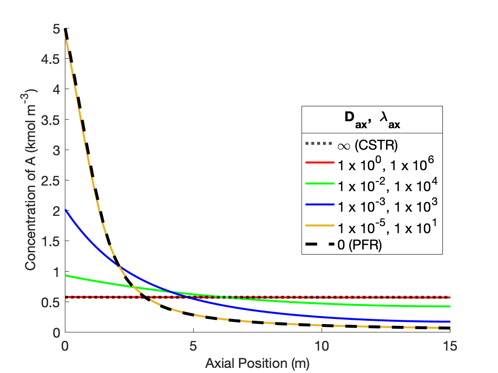
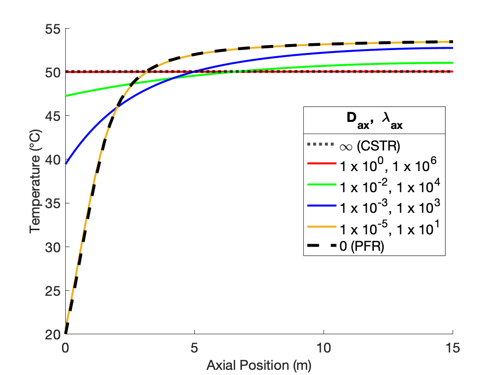
The figures show that at the lowest values of the dispersion coefficients, the concentration and temperature profiles are indistinguishable from those for a PFR. This is not surprising. When the dispersion coefficients are equal to zero, the axial dispersion model becomes identical to the PFR model (Appendix I). Thus, as the dispersion coefficients approach zero, the profiles approach those of a PFR.
The figures also show that at the largest values of the dispersion coefficients, the concentration and temperature become constant along the length of the reactor and equal to those for a CSTR. When the dispersion coefficients are infinite, mixing in the axial direction becomes instantaneous, resulting in perfect mixing. Thus, as the dispersion coefficients approach infinity, the concentration and temperature profiles become flat and the concentration and temperature are the same as those of a CSTR.
The figures show that at intermediate values of the dispersion coefficients, the profiles gradually shift from those of a PFR to those of a CSTR as the dispersion coefficients increase. This is why, at intermediate values of the dispersion coefficients, the axial dispersion model may be useful for describing a reactor that does not conform to the assumptions of an ideal PFR or an ideal CSTR.
It is important to notice that at the inlet to the reactor, the axial dispersion model predicts an abrupt change of the concentration and temperature from their feed values. Again, this is reasonable. In a CSTR, the concentration and temperature instantly change to their final values when the fluid enters the reactor. At intermediate values of the dispersion coefficients, the concentration and temperature still change abruptly at the reactor inlet, but not all the way to their final values. Mathematically, the Danckwerts boundary conditions cause this jump to occur. If different boundary conditions were chosen (such as setting the inlet concentration and temperature equal to their feed values), a jump would not necessarily occur. Thus, if one wants the performance of the non-ideal reactor to fall within a range that spans PFR-like at one extreme and CSTR-like at the other, the use of the Danckwerts boundary conditions is essential.
In this example, the dispersion coefficients were varied in unison from values that each approach an ideal PFR to values that each approach an ideal CSTR. The next example utilizes the same reactor systems to ascertain the effects of each dispersion coefficient individually.
24.7.2 Individual Effects of the Axial Dispersion Coefficient and the Thermal Dispersion Coefficient upon Reactor Response
Example 24.7.1 showed that when \(D_{ax}\) = 1.0 and \(\lambda_{ax}\) = 1.0 x 106, the response predicted by the axial dispersion model is essentially that of a CSTR, and when \(D_{ax}\) = 1.0 x 10-5 and \(\lambda_{ax}\) = 1.0 x 101, the response predicted by the axial dispersion model is essentially that of a PFR. Repeat the analysis of Example 24.7.1 using the combinations of \(D_{ax}\) and \(\lambda_{ax}\) in Table 24.3 to examine the effect of varying the dispersion coefficients individually. The first seven rows in the table individually vary the dispersion paramters from the values that correspond to a CSTR and the last seven vary the dispersion parameters from the values that correspond to a PFR.
| \(D_{ax} \left(\text{m}^2 \text{ s}^{-1}\right)\) | \(\lambda_{ax} \left(\text{cal m}^{-1} \text{ s}^{-1} \text{ K}^{-1}\right)\) |
|---|---|
| 1.0 | 1.0 x 106 |
| 1.0 | 1.0 x 104 |
| 1.0 | 1.0 x 103 |
| 1.0 | 1.0 x 101 |
| 1.0 x 10-2 | 1.0 x 106 |
| 1.0 x 10-3 | 1.0 x 106 |
| 1.0 x 10-5 | 1.0 x 106 |
| 1.0 x 10-5 | 1.0 x 106 |
| 1.0 x 10-5 | 1.0 x 104 |
| 1.0 x 10-5 | 1.0 x 103 |
| 1.0 x 10-5 | 1.0 x 101 |
| 1.0 | 1.0 x 101 |
| 1.0 x 10-2 | 1.0 x 101 |
| 1.0 x 10-3 | 1.0 x 101 |
24.7.2.1 Assignment Summary and Mathematical Formulation of the Analysis
The assignment summary and mathematical formulation of the analysis are the same as Section 24.7.1 with the only exception being the values of \(D_{ax}\) and \(\lambda_{ax}\), so those sections will not be duplicated here.
24.7.2.2 Results, Analysis and Discussion
Figure 24.4 shows the effects of individually varying the dispersion coefficients from the values that produce CSTR-like behavior. At the base values the concentration profile is flat at the outlet value of approximately 0.5 kmol m-1, and the temperature profile is flat at a the outlet value of ca. 50 °C.
As \(D_{ax}\) is decreased holding \(\lambda_{ax}\) constant (Figure 24.4, a and b), the temperature profiles remain flat due to the extremely fast axial thermal mixing. The conccentration profiles begin to curve and approach a shape similar to the PFR concentration profile. However because the temperature is high, even at the inlet to the reactor, the rate is larger than in a PFR and consequently the concentration profile is initially steeper than in a PFR. Because the rate is greater initially, the final conversion is higher. That means that more heat is released than in a PFR, causing the final temperature to be greater than in a PFR. Due to the rapid thermal mixing, the temperature profile is flat, but at the higher final temperature.
Conversely, as \(\lambda_{ax}\) decreases holding \(D_{ax}\) constant (Figure 24.4, c and d), the concentration profiles remain flat due to the extremely fast axial mixing. The temperature profiles develop some curvature, but never approach the shape of the PFR temperature profile. The rate is low throughout the reactor due to the low reactant concentration. The low rate means that heat is released at a lower rate than in a PFR, and consequently the temperature rises more slowly.
Overall, Figure 24.4 shows that varying either of the dispersion coefficients while holding the other constant affects both the concentration and the temperature profile, but not to equal degrees. \(D_{ax}\) only appears in the mole balances, so as expected, it has a stronger effect upon the concentration profile. \(\lambda_{ax}\) only appears in the energy balance, so it similarly is expected to affect the temperature profile more significantly than the concentration profile.
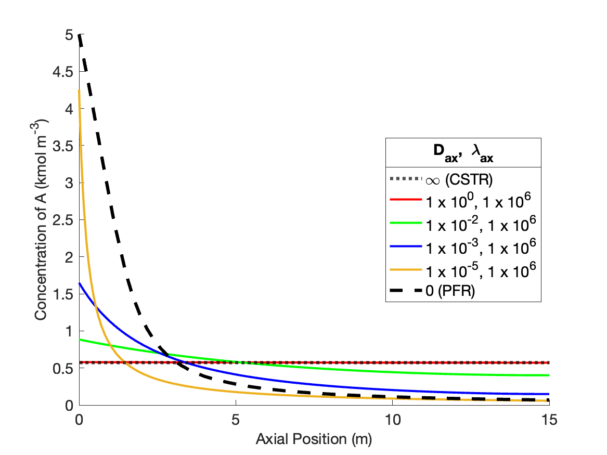
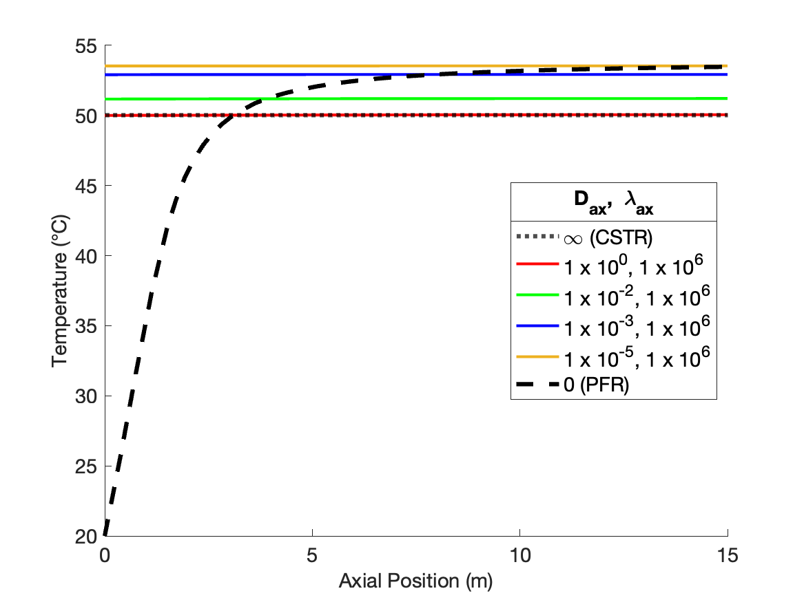
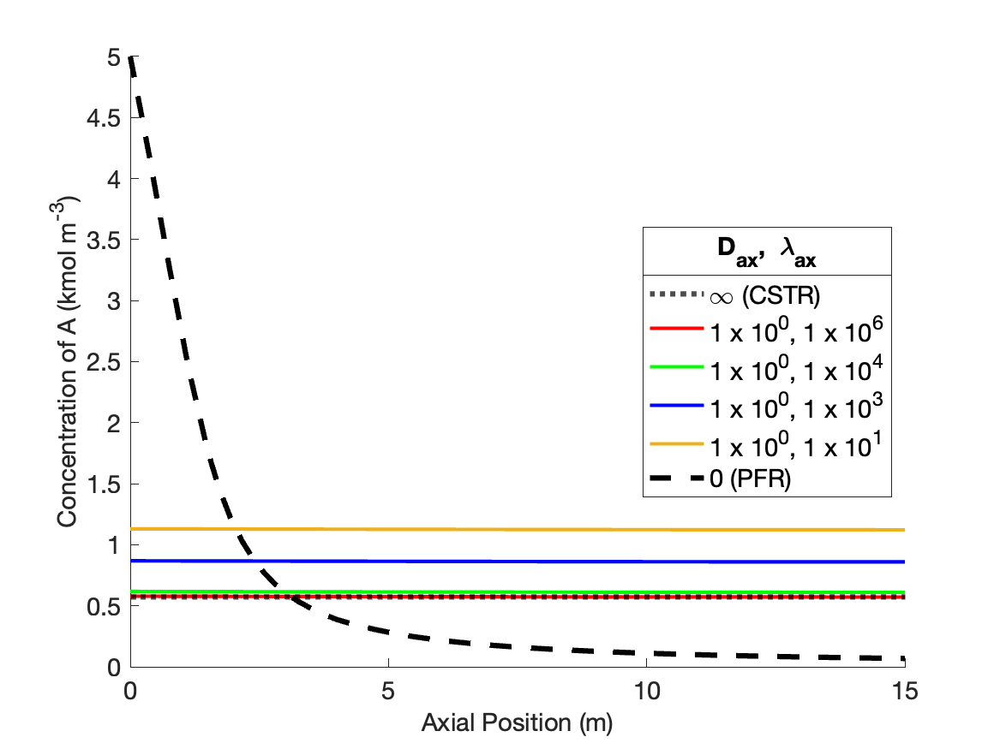
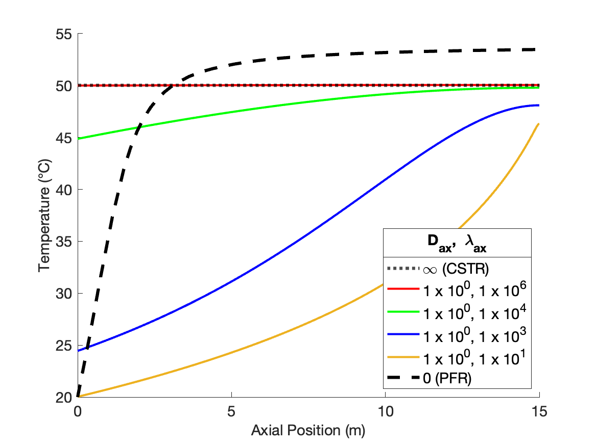
Figure 24.5 shows the effects of indificually varying the dispersion coefficients from the values that produce PFR-like behavior. As \(D_{ax}\) is decreased holding \(\lambda_{ax}\) constant (Figure 24.5, a and b), the concentration profiles become flatter, eventually becoming a flat horizontal line. However, the profile becomes flat at a higher reactant concentration than a CSTR. This is because the inlet temperature remains low and equal to the feed temperature. This is because there is no thermal mixing when \(\lambda_{ax}\) is held at a value characteristic of a PFR. The temperature rises more slowly than in a PFR, resluting in a lower rate near the inlet, a lower overall conversion, and thereby a higher reactant concentration.
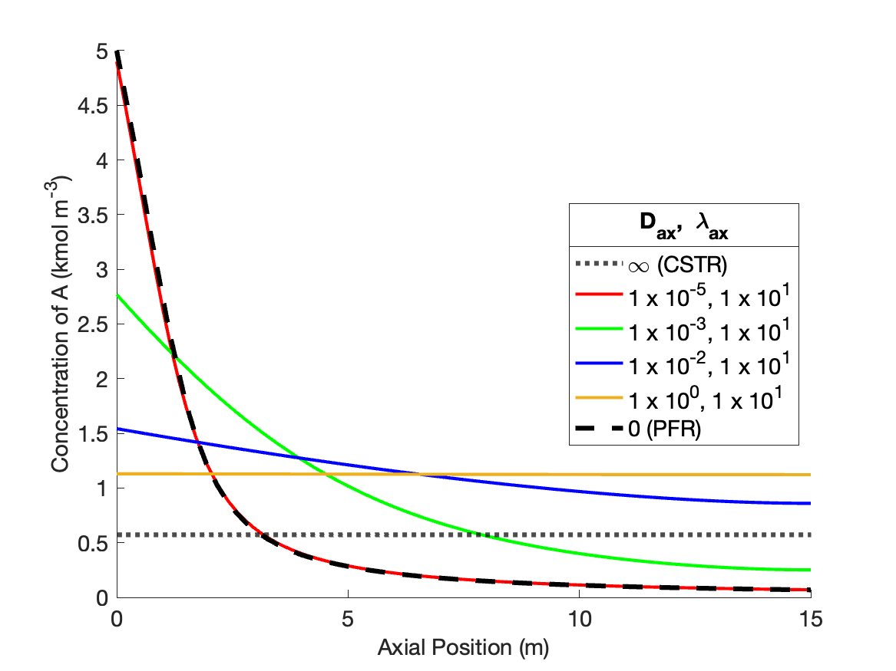
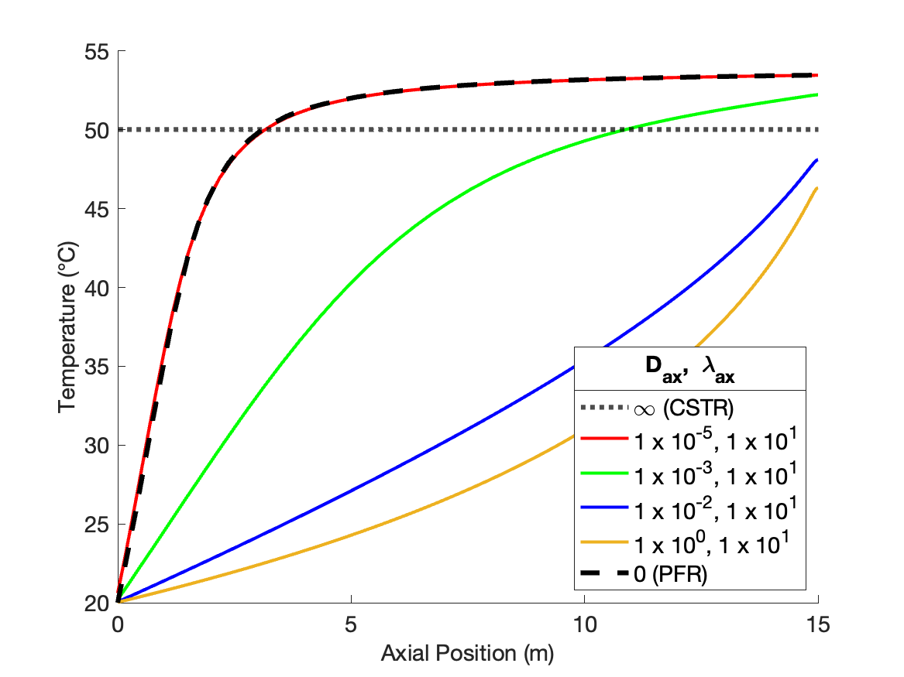
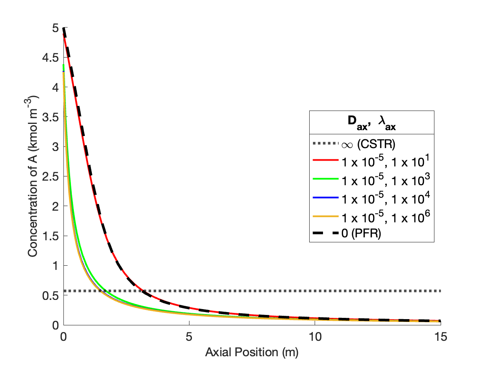
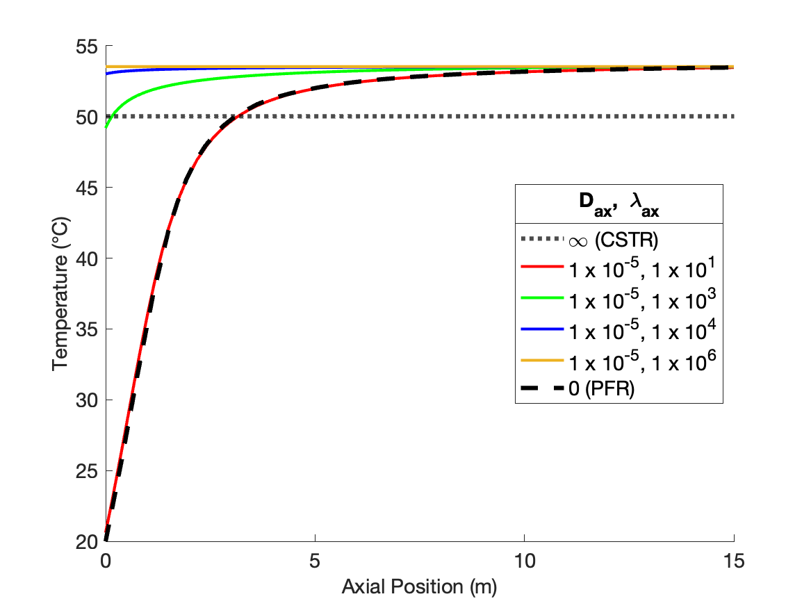
When \(\lambda_{ax}\) decreases holding \(D_{ax}\) constant (Figure 24.5, c and d), the shape of the concentration profiles remain similar to those in a PFR, but they are steeper near the reactor inlet. This occurs because the increasing thermal mixing raises the temperature, and thereby the rate, near the inlet to the reactor.
The results presented in Examples 24.7.1 and 24.7.2 show that by varying \(D_{ax}\) and \(\lambda_{ax}\), the axial dispersion model can display a very wide range of concentration and temperature profiles. This is a very favorable situation if a reaction engineer needs a model that empirically predicts the response of a non-ideal reactor. There is a reasonably good chance that some combination of \(D_{ax}\) and \(\lambda_{ax}\) will offer an acceptably accurate description of the response of the non-ideal reactor.
24.7.3 Non-Ideal Axial Dispersion Model for a Tubular Reactor with Heat Exchange
A 500 L CSTR that has a heat exchange jacket area of 2 m2 with an overall heat transfer coefficient of 500 kcal m-2 h-1 K-1 is being used to convert A to Z according to reaction (1). The 150 °C liquid feed to the process is a 2 M solution of A, flowing at 250 L h-1. The jacket contains a heat exchange fluid at a constant temperature of 180 °C. The rate expression for reaction (1) is shown in equation (2), where the rate coeffficient displays Arrhenius temerature dependence with a pre-exponential factor of 1.14 x 109 L mol-1 h-1 and an activation energy of 18.2 kcal mol-1. The reacting fluid has a constant density of 1.2 g ml-1 and a constant heat capacity of 1.17 cal ml-1 K-1. The reactor is not an ideal CSTR, but it can be accurately modeled using an axial dispersion model with an axial dispersion coefficient, \(D_{ax}\), of 0.3 m2 h-1 and an axial thermal dispersion coefficent, \(\lambda_{ax}\), of 10 cal m-1 h-1 K-1. Compare the conversion and outlet temperature predicted by the axial dispersion model to those predicted by the ideal CSTR model.
\[ A \rightarrow Z \tag{1} \]
\[ r=kC_A^2 \tag{2} \]
Click Here to See What an Expert Might be Thinking at this Point
The assignment narrative tells me to compare the conversion and outlet temperature predicted by the ideal CSTR model to those predicted by the axial dispersion model. I’ll begin by summarizing the assignment using appropriate variable symbols for each quantity the narrative provides. I’ll use a subscripted “feed” to denote quantity values in the feed, “0” for values at the reactor inlet, and “1” for values at the reactor outlet. For a CSTR the feed and the reactor inlet are the same, so I’ll use “feed” for both. I will underline variable symbols that represent a set of values. I’ll use “CSTR” and “ad” to distinguish the CSTR and axial dispersion reactors. Assuming the liquid to be incompressible, the volumetric flow rate will be constant and does not need a subscript.
24.7.3.1 Assignment Summary
Reaction:
\[ A \rightarrow Z \tag{1} \]
Rate Expression:
\[ r=kC_A^2 \tag{2} \]
Reactors: Ideal CSTR and, separately, non-ideal reactor using the axial dispersion model, both with heat exchange.
Reactor Schematics:


Quantities of Interest: \(f_{A,CSTR}\), \(T_{1,CSTR}\), \(f_{A,ad}\), and \(T_{1,ad}\)
Given and Known Constants: \(V_{CSTR}\) = 500 L, \(A\) = 2 m2, \(U\) = 500 kcal m-2 h-1 K-1, \(T_{feed}\) = 150 °C, \(C_{A,feed}\) = 2 M, \(\dot{V}\) = 250 L h-1, \(T_{ex}\) = 180 °C, \(k_0\) = 1.14 x 109 L mol-1 h-1, \(E\) = 18.2 kcal mol-1, \(\rho\) = 1.2 g ml-1, \(\breve{C}_p\) = 1.17 cal ml-1 K-1, \(D_{ax}\) = 0.3 m2 h-1, and \(\lambda_{ax}\) = 10 cal m-1 h-1 K-1.
24.7.3.2 Mathematical Formulation of the Analysis
Click Here to See What an Expert Might be Thinking at this Point
I will need to formulate a steady-state CSTR model and a steady-state axial dispersion model to predict the conversions and outlet temperatures. I’ll begin with the CSTR model. The model must include mole balances, and since it isn’t isothermal, an energy balance is also needed. There is a heat exchange fluid, but I know its temperature. That means I can solve the mole and energy balances separately from an energy balance on the heat exchange fluid, so the design equations will be mole balances and an energy balance.
The general form of the CSTR mole balance is given in Equation 6.24.
\[ \cancelto{0}{\frac{V}{\dot{V}}\frac{d \dot{n}_i}{dt}} + \cancelto{0}{\frac{\dot{n}_i}{\dot{V}}\frac{dV}{dt}} - \cancelto{0}{\frac{\dot{n}_iV}{\dot{V}^2}\frac{d \dot{V}}{dt}} = \dot{n}_{i,in} - \dot{n}_i + V \sum_j \nu_{i,j}r_j \]
Here the reactor operates at steady-state, so the time derivatives are all equal to zero. Additionally, there is only one reaction taking place, so the summation becomes a single term and it isn’t necessary to index the reaction.
\[ 0 = \dot{n}_{i,feed} - \dot{n}_{i,1} + V \nu_{i}r \]
The general form of the CSTR energy balance is given in Equation 6.25.
\[ \begin{split} \cancelto{0}{\frac{V}{\dot{V}}\sum_i \left( \dot{n}_i \hat{C}_{p,i} \right) \frac{dT}{dt}} &- \cancelto{0}{V \frac{dP}{dt}} - \cancelto{0}{P\frac{dV}{dt}} = \dot{Q} - \cancelto{0}{\dot{W}} \\&- \cancelto{\dot{V}\int_{T_{feed}}^{T_1} \breve{C}_p dT}{\sum_i\dot{n}_{i,in} \int_{T_{in}}^T \hat{C}_{p,i}dT} - V\sum_j r_j \Delta H_j \end{split} \]
Again, the time derivatives are equal to zero because the reactor operates at steady-state. The only moving shaft or boundary is the agitator, and the work it does is negligible. The narrative provides the volumetric heat capacity, so the sum over the molar heat capacities can be replaced with a single term, and the integral can be evaluated. Finally, again, there is only one reaction, so the sum over the reactions reduces to a single term, and it isn’t necessary to index the reaction.
\[ 0 = \dot{Q} - \dot{V} \breve{C}_p \left(T_1 - T_{feed}\right) - V r \Delta H \]
CSTR Design Equations
\[ 0 = \dot{n}_{A,feed} - \dot{n}_{A,1} - V r = \epsilon_1 \tag{3} \]
\[ 0 = \dot{n}_{Z,feed} - \dot{n}_{Z,1} + V r = \epsilon_2 \tag{4} \]
\[ 0 = \dot{Q} - \dot{V} \breve{C}_p \left(T_1 - T_{feed}\right) - V r \Delta H = \epsilon_3 \tag{5} \]
Click Here to See What an Expert Might be Thinking at this Point
The design equations above are already written in the form of residual expressions. I’ll solve them numerically for the outlet molar flow rates and the outlet temperature, using a ATE solver. I’ll need to provide a guess for the ATE unknowns and a residuals function to the ATE solver.
The CSTR residuals function will receive values of the CSTR unknowns, and it must return the corresponding values of the CSTR design equation residuals. Before that can be done, any other unknown quantities appearing in the residuals expressions must be calculated. In this assignment, that means that the inlet molar flow rates, reaction rate, and rate of heat transfer must be calculated.
The inlet molar flow rate of A can be calculated from the volumetric flow rate and the concentration of A in the feed. The feed only contains reagent A, so the inlet molar flow rate of reagent Z is equal to zero. The rate can be calculated using the rate expression given in the assignment, but first the rate coefficient and the concentration of A must be computed. The rate coefficient can be found using the Arrhenius expression, Equation 4.8, and the concentration using the defining equation for concentration in a flow system, Equation 1.15. When doing this, the outlet temperature and molar flow rate must be used.
The rate of heat transfer can be found using the heat transfer area and heat transfer coefficient provided in the narrative.
CSTR Residuals Function
Arguments: \(\dot{n}_{A,1}\), \(\dot{n}_{Z,1}\), and \(T_1\).
Returns: \(\epsilon_1\), \(\epsilon_2\), and \(\epsilon_3\).
Algorithm:
\[ \dot{n}_{A,feed} = \dot{V} C_{A,feed} \tag{6} \]
\[ \dot{n}_{Z,feed} = 0 \tag{7} \]
\[ k = k_0 \exp{ \left( \frac{-E}{RT_1}\right)} \tag{8} \]
\[ C_A = \frac{\dot{n}_{A,1}}{\dot{V}} \tag{9} \]
\[ r=kC_A^2 \tag{2} \]
\[ \dot{Q} = UA\left(T_{ex} - T_1\right) \tag{10} \]
\[ \epsilon_1 = \dot{n}_{A,feed} - \dot{n}_{A,1} - V r \tag{3} \]
\[ \epsilon_2 = \dot{n}_{Z,feed} - \dot{n}_{Z,1} + V r \tag{4} \]
\[ \epsilon_3 = \dot{Q} - \dot{V} \breve{C}_p \left(T_1 - T_{feed}\right) - V r \Delta H \tag{5} \]
Click Here to See What an Expert Might be Thinking at this Point
The last thing I need in the CSTR model is a CSTR reactor function that solves the design equations and returns the outlet molar flow rates and temperature. I’ll use an ATE solver to do that. I need to provide a guess for the CSTR unknowns and a reference to the CSTR residuals function to the ATE solver. Since I’m only going to be solving the CSTR design equations, I’ll generate the guess within the reactor function. Alternatively, I could pass a guess to the CSTR reactor function as an argument.
CSTR Reactor Function
Arguments: none.
Returns: \(\dot{n}_{A,1}\), \(\dot{n}_{Z,1}\), and \(T_1\).
Algorithm:
\[ \begin{matrix} \dot{n}_{A,1,guess}, \dot{n}_{Z,1,guess}, T_{1,guess}, \text{ and CSTR residuals function}\\ \Downarrow \\ \text{ATE solver} \\ \Downarrow \\ \dot{n}_{A,1}, \dot{n}_{Z,1}, T_1 \end{matrix} \tag{11} \]
Click Here to See What an Expert Might be Thinking at this Point
Now I’ll formulate the axial dispersion model. The design equations will consist of mole balances and an energy balance on the reacting fluid, just as for the CSTR. Because the mole and energy balances were originally second order ODEs and were converted to equivalent first order ODEs, there are two mole balance equations for each reagent and two energy balance equations. The first group define the new variable used to convert the equations from second- to first-order (Equations 24.10 and 24.11).
\[ \frac{dC_i}{dz} = \omega_i \qquad \frac{dT}{dz} = \omega_T \]
The other axial dispersion mole balances then take the form shown in Equation 24.12.
\[ - D_{ax}\frac{d \omega_i}{d z} = - \frac{4 \dot{V}}{\pi D^2}\omega_i + \sum_j \nu_{i,j}r_j \]
This equation can be rearranged as a derivative function, and since there is only one reaction, the summation reduces to a single term with no need to index the reaction.
\[ \frac{d \omega_i}{d z} = \frac{1}{D_{ax}} \frac{4 \dot{V}}{\pi D^2}\omega_i - \nu_{i}r \]
The first-order axial dispersion energy balance is given by Equation 24.13.
\[ - \lambda_{ax}\frac{d \omega_T}{d z} = - \frac{4 \dot{V}}{\pi D^2} \cancelto{\breve{C}_p}{\left(\sum_i C_i \hat{C}_{p,i}\right)} \omega_T + \frac{4U}{D}\left(T_{ex} - T\right) - \sum_j r_j \Delta H_j \]
It, too, can be rearranged in the form of a derivative expression with the summation replaced by a single reaction term. In addition, since the volumetric heat capacity is provided in the assignment narrative, the sum over the molar heat capacities can be replaced with a single term.
\[ \frac{d\omega_T}{dz} = \frac{1}{\lambda_{ax}} \frac{4 \dot{V} \breve{C}_p}{\pi D^2} \omega_T - \frac{4U}{D}\left(T_{ex} - T\right) + r \Delta H \]
The design equations are ODEs, and to solve them numerically I need to specify initial values or boundary values. I’ll use the Danckwerts boundary conditions, Equations 24.14 and 24.15, at \(z=0\), and require that the concentrations and temperature stop changing, Equations 24.16 and 24.17, at \(z=L\).
\[ C_{i,0} = C_{i,feed} + D_{ax} \frac{\pi D^2}{4} \frac{\omega_{i,0}}{\dot{V}} \]
\[ T_0 = \frac{\cancelto{\breve{C}_p}{\sum_iC_{i,feed} \hat{C}_{p,i}}}{\cancelto{\breve{C}_p}{\sum_iC_{i,0} \hat{C}_{p,i}}}T_{feed} + \lambda_{ax} \frac{\pi D^2}{4} \frac{\omega_{T,0}}{\dot{V} \cancelto{\breve{C}_p}{\sum_i\left(C_{i,0} \hat{C}_{p,i} \right)}} \]
\[ 0 = \omega_{i,1} = \epsilon_{i,1} \]
\[ 0 = \omega_{T,1} = \epsilon_{T,1} \]
The boundary conditions for the concentrations and the temperature must be written in the form of residual expressions (the boundary equations for the new variables are already in that form). The concentration of Z in the feed is zero. In the temperature boundary condition, the sum over the molar heat capacities can be replaced with a single term containing the volumetric heat capacity. Upon doing so, the numerator and denominator in the fraction on the right of the equals sign become equal and cancel.
\[ 0 = C_{i,feed} + D_{ax} \frac{\pi D^2}{4\dot{V}} \omega_{i,0} - C_{i,0} = \epsilon_{i,0} \]
\[ 0 = T_{feed} + \lambda_{ax} \frac{\pi D^2}{4\dot{V} \breve{C}_p} \omega_{T,0} - T_0 = \epsilon_T \]
Design Equations:
\[ \frac{dC_A}{dz} = \omega_A \tag{12} \]
\[ \frac{dC_Z}{dz} = \omega_Z \tag{13} \]
\[ \frac{dT}{dz} = \omega_T \tag{14} \]
\[ \frac{d \omega_A}{d z} = \frac{1}{D_{ax}} \frac{4 \dot{V}}{\pi D^2}\omega_A + r \tag{15} \]
\[ \frac{d \omega_Z}{d z} = \frac{1}{D_{ax}} \frac{4 \dot{V}}{\pi D^2}\omega_Z - r \tag{16} \]
\[ \frac{d\omega_T}{dz} = \frac{1}{\lambda_{ax}} \frac{4 \dot{V} \breve{C}_p}{\pi D^2} \omega_T - \frac{4U}{D}\left(T_{ex} - T\right) + r \Delta H \tag{17} \]
Boundary Conditions Residuals Equations
\[ 0 = C_{A,feed} + D_{ax} \frac{\pi D^2}{4\dot{V}} \omega_{A,0} - C_{A,0} = \epsilon_{A,0} \tag{18} \]
\[ 0 = D_{ax} \frac{\pi D^2}{4\dot{V}} \omega_{Z,0} - C_{Z,0} = \epsilon_{Z,0} \tag{19} \]
\[ 0 = T_{feed} + \lambda_{ax} \frac{\pi D^2}{4\dot{V} \breve{C}_p} \omega_{T,0} - T_0 = \epsilon_{T,0} \tag{20} \]
\[ 0 = \omega_{A,1} = \epsilon_{A,1} \tag{21} \]
\[ 0 = \omega_{Z,1} = \epsilon_{Z,1} \tag{22} \]
\[ 0 = \omega_{T,1} = \epsilon_{T,1} \tag{23} \]
Click Here to See What an Expert Might be Thinking at this Point
The axial dispersion design equations are BVODEs. I will use a BVODE solver to solve them, and one of the things I’ll need to provide to the solver is a derivatives function. The derivatives function must receive values of the independent (\(z\)) and dependent (\(C_A\), \(C_Z\), \(T\), \(\omega_A\), \(\omega_Z\), and \(\omega_T\)) variables. It must return the values of the derivatives in the design equations.
Before the derivatives can be evaluated, any other unknown quantities appearing in the design equations must be calculated. One unknown quantity is the reactor diameter. I’d like the axial dispersion reactor to have the same volume and the same heat transfer area as the CSTR. This allows me to calculate the diameter and length of the axial dispersion reactor.
\[ \begin{matrix} \displaystyle\frac{\pi D^2 L}{4} = V_{CSTR}\\ \pi DL = A_{CSTR} \end{matrix} \qquad \Rightarrow \qquad D = 4 \frac{V_{CSTR}}{A_{CSTR}} \]
\[ L = \frac{A_{CSTR}}{\pi D} \]
The only other unknown appearing in the design equations here is the rate, which can be calculated using the rate expression provided in the assignment narrative. To calculate the rate, it will be necessary to use the Arrhenius expression , Equation 4.8.
Axial Dispersion Derivatives Function
Arguments: \(z\), \(C_A\), \(C_Z\), \(T\), \(\omega_A\), \(\omega_Z\), and \(\omega_T\).
Returns: \(\frac{dC_A}{dz}\), \(\frac{dC_Z}{dz}\), \(\frac{dT}{dz}\), \(\frac{d\omega_A}{dz}\), \(\frac{d\omega_Z}{dz}\), and \(\frac{d\omega_T}{dz}\).
Algorithm:
\[ D = 4 \frac{V_{CSTR}}{A_{CSTR}} \tag{24} \]
\[ k = k_0 \exp{ \left( \frac{-E}{RT}\right)} \tag{25} \]
\[ r=kC_A^2 \tag{2} \]
\[ \frac{dC_A}{dz} = \omega_A \tag{12} \]
\[ \frac{dC_Z}{dz} = \omega_Z \tag{13} \]
\[ \frac{dT}{dz} = \omega_T \tag{14} \]
\[ \frac{d \omega_A}{d z} = \frac{1}{D_{ax}} \frac{4 \dot{V}}{\pi D^2}\omega_A + r \tag{15} \]
\[ \frac{d \omega_Z}{d z} = \frac{1}{D_{ax}} \frac{4 \dot{V}}{\pi D^2}\omega_Z - r \tag{16} \]
\[ \frac{d\omega_T}{dz} = \frac{1}{\lambda_{ax}} \frac{4 \dot{V} \breve{C}_p}{\pi D^2} \omega_T - \frac{4U}{D}\left(T_{ex} - T\right) + r \Delta H \tag{17} \]
Click Here to See What an Expert Might be Thinking at this Point
When I call the BVODE solver to solve the axial dispersion design equations, I’ll also need to provide a boundary value residuals function. This function must receive the values of the dependent variables at \(z=0\) (\(C_{A,0}\), \(C_{Z,0}\), \(T_0\), \(\omega_{A,0}\), \(\omega_{Z,0}\), and \(\omega_{T,0}\)) and at \(z=L\) (\(C_{A,1}\), \(C_{Z,1}\), \(T_1\), \(\omega_{A,1}\), \(\omega_{Z,1}\), and \(\omega_{T,1}\)). It must use them to evaluate and return the residuals.
Boundary Conditions Residuals Function
Arguments: \(C_{A,0}\), \(C_{Z,0}\), \(T_0\), \(\omega_{A,0}\), \(\omega_{Z,0}\), \(\omega_{T,0}\), \(C_{A,1}\), \(C_{Z,1}\), \(T_1\), \(\omega_{A,1}\), \(\omega_{Z,1}\), and \(\omega_{T,1}\).
Returns: \(\epsilon_{A,0}\), \(\epsilon_{Z,0}\), \(\epsilon_{T,0}\), \(\epsilon_{A,1}\), \(\epsilon_{Z,1}\), and \(\epsilon_{T,1}\).
Algorithm:
\[ \epsilon_{A,0} = C_{A,feed} + D_{ax} \frac{\pi D^2}{4\dot{V}} \omega_{A,0} - C_{A,0} \tag{18} \]
\[ \epsilon_{Z,0} = D_{ax} \frac{\pi D^2}{4\dot{V}} \omega_{Z,0} - C_{Z,0} \tag{19} \]
\[ \epsilon_{T,0} = T_{feed} + \lambda_{ax} \frac{\pi D^2}{4\dot{V} \breve{C}_p} \omega_{T,0} - T_0 \tag{20} \]
\[ \epsilon_{A,1} = \omega_{A,1} \tag{21} \]
\[ \epsilon_{Z,1} = \omega_{Z,1} \tag{22} \]
\[ \epsilon_{T,1} = \omega_{T,1} \tag{23} \]
Click Here to See What an Expert Might be Thinking at this Point
To complete the axial dispersion reactor model, I need to write an axial dispersion reactor function that solves the design equations and returns corresponding sets of values of \(z\), \(C_A\), \(C_Z\), \(T\), \(\omega_A\), \(\omega_Z\), and \(\omega_T\) that span the range from \(z=0\) to \(z=L\). The length of the axial dispersion reactor can be calculated by requiring it to have the same volume and heat exchange areas as the CSTR, as noted earlier.
To use a BVODE solver, I must provide the upper and lower values of \(z\), the axial dispersion derivatives and boundary value residuals functions to the solver. In addition, I need to provide a guess for the dependent variables in the range from \(z=0\) to \(z=L\). For this assignment I’ll pass the guess to the axial disperson reactor function as an argument. My reason for passing the guess as an argument is that I can solve the CSTR design equations and then use the results to generate the guess for the axial dispersion model.
Axial Dispersion Reactor Model
Arguments: \(C_{A,guess}\), \(C_{Z,guess}\), \(T_{guess}\), \(\omega_{A,guess}\), \(\omega_{Z,guess}\), and \(\omega_{T,guess}\).
Returns: \(\underline{z}\), \(\underline{C}_A\), \(\underline{C}_Z\) \(\underline{T}\), \(\underline{\omega}_A\), \(\underline{\omega}_Z\), and \(\underline{\omega}_T\).
Algorithm:
\[ D = 4 \frac{V_{CSTR}}{A_{CSTR}} \tag{24} \]
\[ L = \frac{A_{CSTR}}{\pi D} \tag{26} \]
\[ \begin{matrix} x_0, L, C_{A,guess}, C_{Z,guess}, T_{guess},\\ \omega_{A,guess}, \omega_{Z,guess}, \omega_{T,guess}, \\ \text{axial dispersion derivatives function}, \\ \text{boundary conditions residuals function} \\ \Downarrow \\ \text{BVODE Solver} \\ \Downarrow \\ \underline{z}, \underline{C}_A, \underline{C}_Z, \underline{T}, \underline{\omega}_A, \underline{\omega}_Z, \underline{\omega}_T \end{matrix}\tag{27} \]
Click Here to See What an Expert Might be Thinking at this Point
Now that I have written the CSTR and axial dispersion reactor functions, I can use them to calculate the quantities of interest. I can simply call the CSTR reactor function to get the outlet molar flow rates of A and Z and the outlet temperature. I can calculate the conversion using its defining equation, Equation 3.5.
I can also calculate the concentrations of A and Z by dividing their molar flow rates by the volumetric flow rate, Equation 1.15. Then I can use the CSTR concentrations and temperature as guesses for the axial dispersion model.
I also need guesses for \(\omega_A\), \(\omega_Z\), and \(\omega_T\). Those variables are the derivatives of the concentrations and temperature with respect to Z. As guesses for \(\omega_A\), I can use the difference between the inlet and outlet concentration of A divided by the length of the reactor. Since one Z is produced for each A that is consumed, \(\omega_Z\) will equal \(-\omega_A\). For \(\omega_T\) I can use the difference between the inlet and outlet temperature divided by the length of the reactor. These are simply guesses, and if the BVODE solver doesn’t converge, I may need to change them.
With that, I can call the axial dispersion reactor function to get the profiles of the concentrations, temperature, \(\omega_A\), \(\omega_Z\), and \(\omega_T\). I can use the inlet and outlet concentrations to calculate the conversion.
\[ \begin{matrix} \text{CSTR reactor function} \\ \Downarrow \\ \dot{n}_{A,1,CSTR}, \dot{n}_{Z,1,CSTR}, T_{1,CSTR} \end{matrix} \tag{28} \]
\[ f_{A,CSTR} = \frac{C_{A,feed}\dot{V} - \dot{n}_{A,1,CSTR}}{C_{A,feed}\dot{V}} \tag{29} \]
\[ D = 4 \frac{V_{CSTR}}{A_{CSTR}} \tag{24} \]
\[ L = \frac{A_{CSTR}}{\pi D} \tag{26} \]
\[ C_{A,guess} = \frac{\dot{n}_{A,1,CSTR}}{\dot{V}} \tag{30} \]
\[ C_{Z,guess} = \frac{\dot{n}_{Z,1,CSTR}}{\dot{V}} \tag{31} \]
\[ T_{guess} = T_{1,CSTR} \tag{32} \]
\[ \omega_{A,guess} = \frac{\frac{\dot{n}_{A,1,CSTR}}{\dot{V}} - C_{A,feed}}{L} \tag{33} \]
\[ \omega_{Z,guess} = - \omega_{A,guess} \tag{34} \]
\[ \omega_{T,guess} = \frac{T_{1,CSTR} - T_{feed}}{L} \tag{35} \]
\[ \begin{matrix} C_{A,guess}, C_{Z,guess}, T_{guess}, \omega_{A,guess}, \omega_{Z,guess}, \omega_{T,guess} \\ \Downarrow \\ \text{axial dispersion reactor function} \\ \Downarrow \\ \underline{z}, \underline{C}_A, \underline{C}_Z, \underline{T}, \underline{\omega}_A, \underline{\omega}_Z, \underline{\omega}_T \end{matrix} \tag{36} \]
\[ f_{A,ad} = \frac{C_{A,feed}\dot{V} - \underline{C}_A \big\vert_{z=L}}{C_{A,feed}\dot{V}} \tag{37} \]
\[ T_{1,ad} = \underline{T} \big\vert_{z=L} \tag{38} \]
24.7.3.3 Results, Analysis, and Discussion
The calculations were performed as described above. The conversions and outlet temperatures predicted by the CSTR and axial dispersion models are presented in Table 24.4. Both the conversion and the temperature are greater in the axial dispersion reactor.
The mixing in the axial dispersion model is less than perfect, resulting in concentration and temperature profiles that are not flat, as shown in Figure 24.8. The concentration of A decreases along the length of the reactor due to its consumption in the reaction. The reaction is endothermic, and if the reactor was adiabatic, the temperature would decrease along its length. However the temperature actually rises due to heat transfer from the heat exchange fluid.
Near the inlet to the axial dispersion reactor the concentration of A is greater than in the CSTR, and taken alone, this would result in a larger reaction rate than in the CSTR. However, the temperature near the inlet to the axial dispersion reactor is lower than the CSTR, and this, taken alone, would lead to a lower rate.
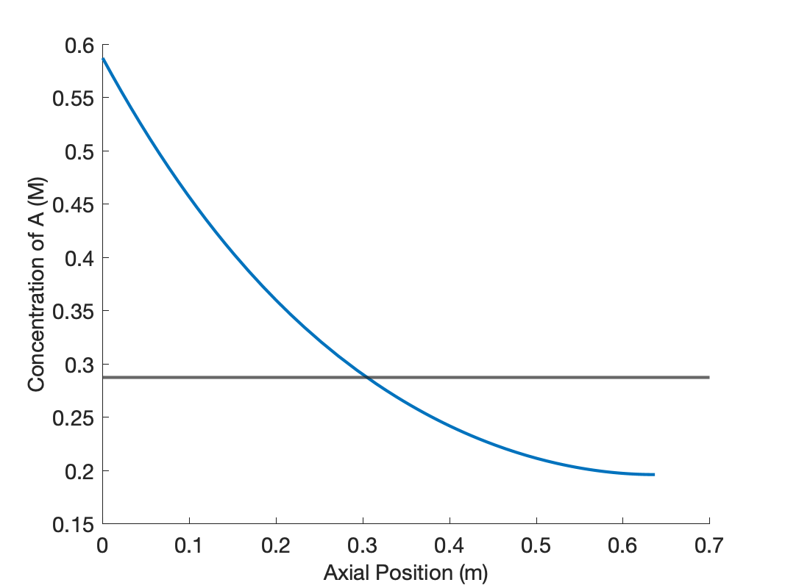
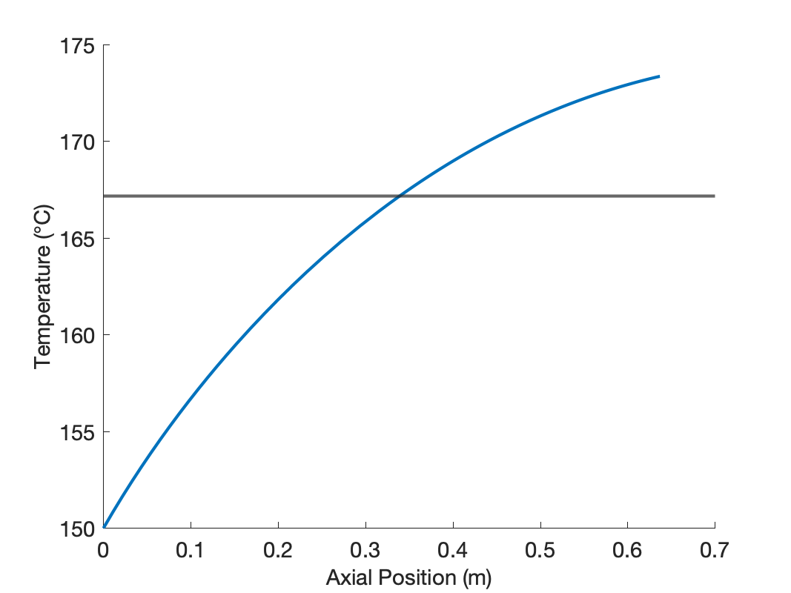
At an axial position slightly greater than 0.3 m into the reactor, the concentration and temperature in the axial dispersion reactor become equal to those of the CSTR. In other words, less than the total reactor volume was needed in the axial dispersion reactor to reach the same conversion as in the CSTR. This means that the rate is greater in the first part of the axial dispersion reactor than in the CSTR. Apparently, for the operating conditions in this assignment, the effect of the higher concentration is stronger than that of lower temperature. Further reaction will occur in the remaining axial dispersion reactor volume, and thus, the conversion and final temperature are greater than the CSTR.
The axial dispersion reactor diameter and length were chosen so that the volume and heat transfer area were equal to the CSTR. This resulted in a diameter of 1 m, and a length of 0.637 m. These dimensions would be absurd for an actual tubular reactor with heat transfer. When heat is being added or removed from a tubular reactor, small diameters are typically used to keep the distance over which heat is transferred small. Here the reactor diameter is larger than the reactor length. The important point to remember is that here, the axial dispersion reactor is being used to model a stirred tank that does not fully conform to the ideal CSTR assumptions. The diameter and length are not important; what matters is that the axial dispersion model can provide an accurate description of the non-ideal stirred tank.
24.8 Symbols Used in Chapter 24
| Symbol | Meaning |
|---|---|
| \(k_j\) | Rate coefficient for reaction \(j\). |
| \(k_{j,0}\) | Arrhenius pre-exponental factor for rate coefficient \(k_j\). |
| \(r_j\) | Rate of reaction \(j\). |
| \(z\) | Distance from the reactor inlet in the axial direction. |
| \(A\) | Heat transfer area. |
| \(C_i\) | Concentration of reagent \(i\); additional subscripts denote the location. |
| \(\hat{C}_{p,i}\) | Molar heat capacity of reagent \(i\). |
| \(\tilde{C}_p\) | Gravimetric heat capacity. |
| \(\breve{C}_p\) | Volumetric heat capacity. |
| \(D_{ax}\) | Axial dispersion coefficient. |
| \(D\) | Tubular reactor diameter. |
| \(E_j\) | Arrhenius activation energy for rate coefficient \(k_j\). |
| \(L\) | Lenght of a tubular reactor. |
| \(Pe_{ax}\) | Axial Peclet number, an additional subscripted “h” denotes heat. |
| \(T\) | Temperature; additional subscripts denote the location. |
| \(U\) | Overall heat transfer coefficient. |
| \(\dot{V}\) | Volumetric flow rate; additional subscripts denote the location. |
| \(\lambda_{ax}\) | Axial thermal dispersion coefficient. |
| \(\nu_{i,j}\) | Stoichiometric coefficient of reagent \(i\) in reaction \(j\). |
| \(\rho\) | Fluid density. |
| \(\omega_i\) | Variable used to convert second order balance equations to equivalent first order equations; \(i\) denotes the reagent, or \(T\) for temperature. |
| \(\Delta H_j\) | Heat of reaction \(j\). |